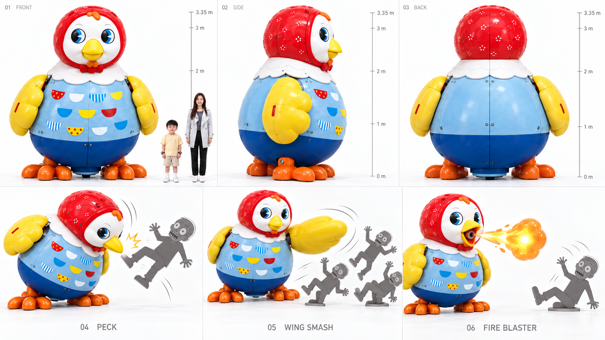
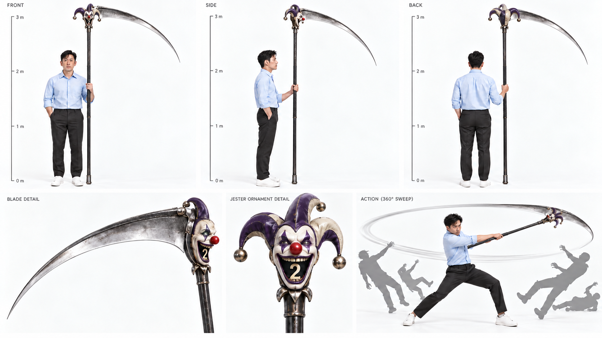

CHARACTER BIBLE · EP.01
가족의 얼굴부터 변신까지
아빠의 해열제를 구하러 간 엄마와 진. 진은 룰렛에서 나온 7번 스파이더 슈트로 엄마와 루나를 지킵니다. 이미지를 누르면 정면·측면·후면 시트를 크게 볼 수 있습니다.
최신 캐릭터 시트 ↓주인공 · 기본 모습
최신 얼굴 기준: 제레미는 젊은 하정우 느낌, 릴리는 부산행 정유미 느낌의 자연스러운 영화 주연, 진은 동글동글한 7살 얼굴입니다. 아래 변신·무기 사용 시트에도 이 얼굴 기준을 적용했습니다. 최신 컬러 콘티는 아래에서 볼 수 있습니다. 기존 영상은 이전 버전입니다.

진 · 7살
기존 진의 얼굴을 더 동글동글하고 귀엽게 수정. 곤의 호기심·곧은 마음이 성격 기준. 보라색 삐에로 시계 착용.
얼굴 시트 ↗
원본 크게 보기 ↗
제레미 · 아빠
30대 초중반의 젊은 하정우 느낌으로 수정한 제레미 얼굴 시트. 기존 파란 셔츠·체형 유지. EP.01에서는 고열로 은신처에 남아 화면에 나오지 않는다.
얼굴 시트 ↗
원본 크게 보기 ↗
릴리 · 엄마
정유미 느낌을 유지하며 피부·헤어·메이크업을 화사하게 정돈한 릴리 얼굴 시트. 기존 회색 재킷·체형 유지. EP.01에서 아픈 아빠를 위해 진과 해열제를 구하러 간다. 길을 기억하고 시간을 벌며 진에게 거미줄 요령을 알려 준다.
얼굴 시트 ↗
원본 크게 보기 ↗JIN · CRAZY SLOT WATCH
진의 보라색 삐에로 시계 · 상세 디자인
기존 크레이지 슬롯과 같은 보라·아이보리 얼굴, 빨간 코, 양갈래 모자, 보라색 러플과 황동 장식. 진의 왼손목에 착용합니다.

01 정면 · 02 측면 · 03 착용 · 04 빨간 코 누름 · 05 실물 슬롯 돌출 · 06 확대 완료
빨간 코를 누르면 케이스가 열리고 작은 실물 슬롯이 튀어나와 커집니다. 황동 손잡이가 펼쳐지고 입 안 숫자 슬롯이 회전합니다. 시계는 손목에 남습니다.
콘티 반영: 장면 04 시계 소개 → 장면 11 첫 소환 → 장면 22 두 번째 소환. 상세컷은 디자인 기준 시트이며 기존 캐릭터 전신 원본과 완성 영상은 별도입니다.
상세컷 원본 크게 보기 ↗룰렛과 무기 시트

크레이지 슬롯 · 본체
카이토의 룰렛을 참고한 현재 생성 시안. 원작과 완전히 동일한 외형은 아니며 입 모양 슬롯을 시각 기준으로 사용.
원본 크게 보기 ↗
룰렛 · 작동 상태
진이 작동 → 숫자 추첨 → 장비 사용 → 다음 추첨. 결과 선택 불가.
원본 크게 보기 ↗
1번 · 거대 꼬꼬맘
헐크버스터 크기(3.35m)로 거대화. 쪼기·날개 치기·파이어블라스터로 좀비를 물리친다.
원본 크게 보기 ↗
2번 · 거대 낫 · 제레미 전용
원작 카이토 2번과 같은 거대한 낫. 자루 2.4m·날 1.6m·날 각도 80도 고정. 한 번 휘두르면 반경 50m 안의 모든 것이 절반으로 잘린다. 진이 추첨하고 제레미가 사용한다.
원본 크게 보기 ↗좀비 · 빠른 감염자

좀비 · 3방향 시트
새벽의 저주(2004)풍. 창백한 피부·깊은 눈·긴장된 턱, 소리에 반응하는 폭발적 질주. 피와 노출 상처 없이 표현.
원본 크게 보기 ↗루나 · 이탈리안 그레이하운드
회색 단모 · 청록색 하네스 · GPT 생성 6뷰 캐릭터 시트

가슴의 작은 흰 무늬는 생성 결과의 세부사항입니다. 최신 컬러 콘티에는 루나가 함께 등장합니다.
캐릭터 DNA · 루나
부모 얼굴 변경 · 기존 의상 유지 · 22씬·107컷·2분31초 유지
## 캐릭터 DNA · 루나 추가 (2026-10-10)
부모 얼굴은 2026-10-11 새 시트를 따르고, 진은 둥근 얼굴 새 시트를 따르며, 루나와 기존 의상은 유지합니다. 참고 캐릭터의 성격과 행동을 연출에 반영하며 능력과 배경 설정을 이식하지 않습니다. 릴리만 얼음 능력을 사용합니다.
| 인물 | DNA 참고 | 연기와 행동 |
|---|---|---|
| 아빠 제레미 | 하정우 배역 5편 | 겁을 느끼면서도 버티는 생활형 생존력, 건조한 유머, 가족을 먼저 보내는 책임감. 통제에서 협력으로 성장. |
| 엄마 릴리 | 부산행 성경(정유미) | 가족의 감정을 먼저 읽는 공감, 위기에서 숨을 고르는 침착함, 실패해도 다시 시도하는 단단함. 외형은 정유미 스타일, 성격은 성경. 임신 설정은 추가하지 않음. |
| 아들 진 | 헌터헌터 곤 | 호기심을 행동으로 옮기고 실패에도 다시 도전. 루나와 가족을 두고 가지 않는 동료애. 7살의 체력과 판단 범위 유지. |
### 루나 캐릭터 시트
- 이름: 루나 / 1살 / 암컷 / 이탈리안 그레이하운드.
- 외형: 매끈한 회색 단모, 날씬한 몸통, 깊은 가슴과 잘록한 허리, 길고 가는 다리, 길쭉한 주둥이, 접힌 장미귀, 가느다란 꼬리.
- 식별 소품: 청록색 Y형 하네스와 같은 색 짧은 리드줄.
- 성격: 낯선 소리에 움찔하지만 가족에게 붙으면 안정을 찾는 호기심 많은 어린 개.
- 역할: 진의 배려를 드러내고 가족이 함께 탈출해야 한다는 감정선을 강화. 짖음으로 사고를 일으키는 장치로 쓰지 않음.
- 표정·자세: 평상시 접힌 귀와 편안한 꼬리 / 경계할 때 귀를 들고 멈춤 / 안심할 때 진에게 몸을 기댐.
- 동선: S04 도보 → S06 릴리 품 → S10 진의 무릎 → S16 엄마 품 → S17~18 기계 다리와 엄마 팔 사이 → S19 마른 데크에서 릴리 곁.
- 능력: 평상시에는 초능력 없음. 10번 당첨 때만 거대 수호견으로 변신해 보호막·돌진·가족 탑승 탈출을 담당. 얼음은 릴리만 생성.
웹소설 기준 최신 컬러 콘티 24컷에 현재 인물 디자인과 루나를 반영했습니다. 기존 생성 영상은 이전 이야기이며 이번 콘티 갱신에 포함되지 않습니다.